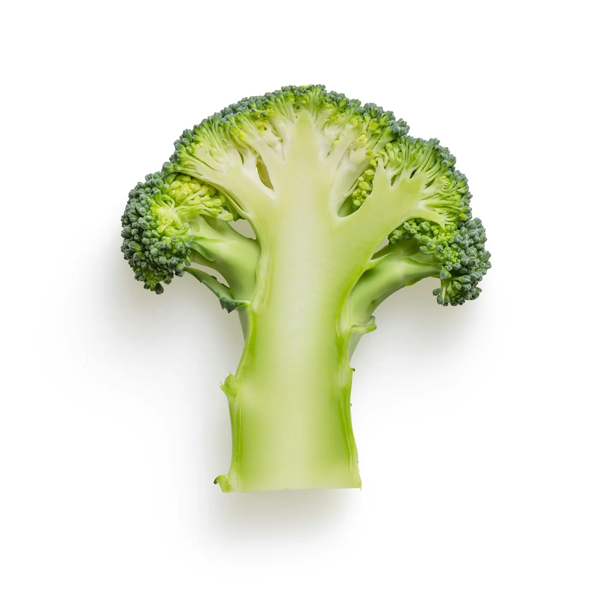

潤中醫診所位於台北市中山區遼寧街，鄰近捷運南京復興站。對外公開的門診方向包含中醫皮膚、鼻子過敏與過敏體質、婦科調理、針灸與水藥。
中醫看診通常會從生活作息、飲食、睡眠與過往就醫情形談起，再決定適合的處置方式。實際診療內容以當日醫師評估為準。
首次就診請攜帶健保卡與身分證件，並預留足夠時間說明身體狀況。若您同時在其他院所就醫或正在服用藥物，請於看診時一併告知。門診異動會在官方 LINE 公布，出發前建議再確認一次。
以下整理自診所對外公開的服務方向。個別症狀是否適合就診、以及實際處置方式，都需由醫師當面評估。
針對皮膚相關不適提供中醫門診評估與調理建議。
包含鼻子過敏與過敏體質相關的中醫調理。
依個人狀況進行中醫婦科方向的問診與調理。
若醫師評估適合，會進行針灸處置，細節會在診間說明。
一般中醫內科門診，由醫師了解身體狀況後說明調理方向。
依評估結果開立水藥或其他藥材。用藥方式請依醫師指示。
以下為一般中醫診所常見的就診步驟，方便您事先了解。實際流程請依現場說明為準。
請先以電話或官方 LINE 預約，並告知希望就診的時段。
請依約定時間到達，於櫃台報到。首次就診請攜帶健保卡與證件。
向醫師說明不適開始的時間、作息、飲食與正在使用的藥物。
依醫師指示用藥或回診。臨時異動請見官方 LINE 通知。
以下整理自診所官方 LINE 公開的營業時間。國定假日休診，臨時異動請以電話或 LINE 確認。
| 一 | 二 | 三 | 四 | 五 | 六 | 日 | |
|---|---|---|---|---|---|---|---|
| 上午 | 休診 | 09:00–12:30 | 休診 | 09:00–12:30 | 休診 | 休診 | 休診 |
| 下午 | 13:30–17:30 | 13:30–17:30 | 13:30–17:30 | 13:30–17:30 | 13:30–17:30 | 13:30–17:30 | 休診 |
| 晚上 | 18:30–21:30 | 休診 | 18:30–21:30 | 休診 | 18:30–21:30 | 18:30–21:30 | 休診 |
以下為氣氛示意照片，不是診所實景。實際空間請以現場為準。

請撥打 02-2711-7200，或加入官方 LINE @380jrozr 留言預約。建議先約好時段再前往。
請攜帶健保卡與身分證件。若有近期檢查報告，或正在服用其他藥物，也建議一併帶去或先列出，方便醫師評估。
不一樣。週二、週四有上午診、下午診，晚上休診；週一、週三、週五、週六為下午與晚間門診。週日與國定假日休診。出發前建議再確認一次。
診所位於遼寧街 107-3 號 1 樓，近捷運南京復興站。詳細路線可見下方交通資訊。
掛號費、部分負擔與自費項目請以現場公告或向櫃台詢問為準，本頁不列出可能異動的金額。